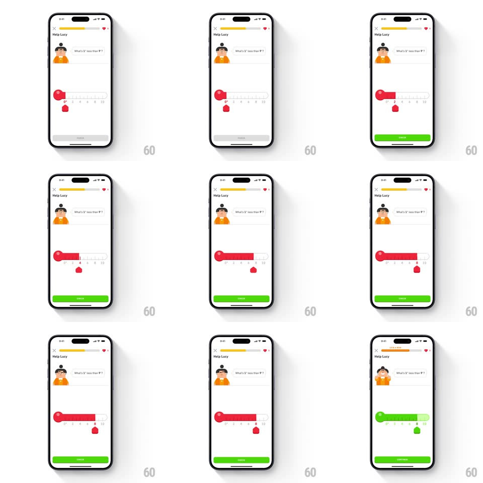

Media
Frame-by-frame

Rebuild this interaction 1:1: Duolingo's thermometer slider exercise ("Help Lucy - What's 1 less than 9?") - dragging the red circular thumb slides a red fill along the thermometer track past tick numbers, and submitting the correct value flips the whole thermometer green in a left-to-right flood while Lucy reacts.

Rebuild this interaction 1:1: Duolingo's thermometer slider exercise ("Help Lucy - What's 1 less than 9?") - dragging the red circular thumb slides a red fill along the thermometer track past tick numbers, and submitting the correct value flips the whole thermometer green in a left-to-right flood while Lucy reacts.
## Integration
Integration: stack-agnostic spec - springs given as stiffness/damping, timed motions as duration + curve; map every value to your framework and animation library of choice.
## Scene
White lesson screen: "Help Lucy" header with progress and hearts, Lucy's speech bubble ("What's 1 less than 9?"), a horizontal thermometer (round red bulb on the left, track numbered 0-10), a red circular thumb riding the track with a small red value tag below, and CHECK at the bottom.
## Motion spec
Pattern: fill-tracking slider with success flood (thermometer variant).
- Drag: the thumb follows the finger 1:1; the red fill extends from the bulb to the thumb in real time; the value tag below tracks the thumb and snaps softly to whole numbers (spring ~500/30 per tick, ~80ms).
- Release: the thumb settles on the nearest tick (spring ~380/26, 200ms); CHECK activates (green) once a value is chosen.
- Correct: the fill floods green across the whole thermometer (300ms, left to right from the bulb), the thumb and tag flip green, Lucy bounces happily (spring ~340/20), and CHECK becomes CONTINUE.
- Wrong: the fill stays red, the thumb shakes (translateX +/-6px, 400ms decaying), and CHECK resets.
## Calibration
- The fill grows from the bulb, not from the thumb - it reads as rising temperature.
- The bulb is the anchor: it never moves, only the column length changes.
## Reduced motion
Fill tracks without tick snapping; success state fades in (200ms); no shake.
## Don't miss
- The number scale stays legible above the fill - the fill sits behind the markings.
- The value tag is attached under the thumb, not floating at the track end.